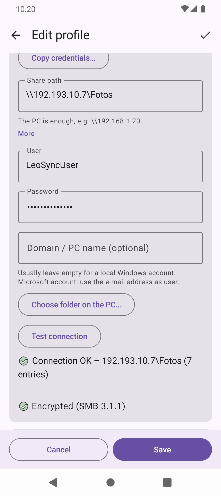
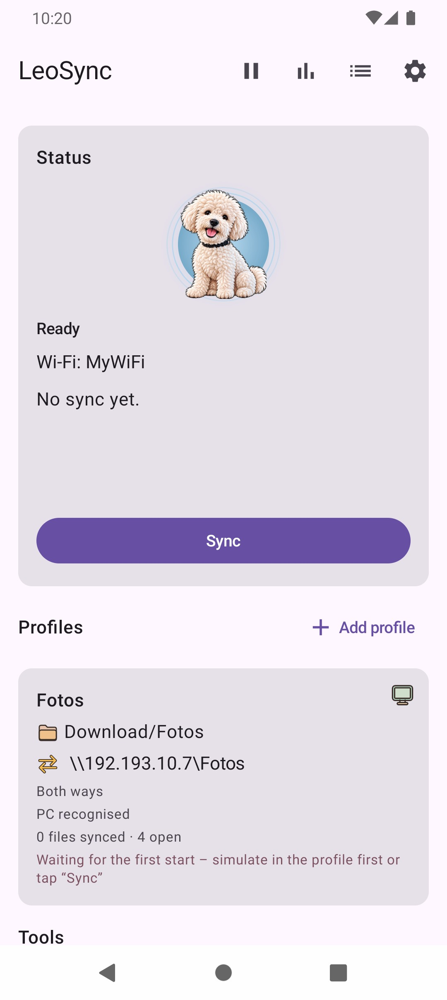

How can you transfer Android photos to a PC?
- USB cable: Works without setup, but it is manual every time and easy to forget.
- Cloud service: Convenient, but your photos sit with the provider, and storage is usually limited.
- Network share (SMB): The phone writes straight into a shared folder on the PC. This is the variant LeoSync automates.
How the transfer over SMB works
Windows can share folders on the network. LeoSync connects to that share via SMB2/SMB3, signs in with a user name and password, and copies new photos and videos into it. No USB cable, no relay server and no cloud. Photos are sorted by year, month and travel country, for example 2026\06 - Egypt, and keep their modification date from the phone.
Setup
- On the PC, share the target folder and allow Change and Read for the Windows user. The steps are in the help, including how to create a dedicated local user just for LeoSync.
- Find the PC's IP address with
ipconfig, for example192.168.1.20. - In LeoSync, tap Add profile, choose Back up photos & videos and enter the PC, user and password. Choose folder on the PC… lists the shares to pick from.
- Check with Test connection, then tap Sync once by hand.


After that, it runs on its own
As soon as the phone is connected to a Wi-Fi network you entered, LeoSync backs up new photos in the background. If the PC is switched off, LeoSync tries again every 30 minutes. If you wish, the backup only runs while charging, and you can pause the automation. If you need space on the phone, use Free up space: each file is checked on the PC first.
Troubleshooting
| Message | What to do |
|---|---|
| User name or password is wrong | Check the Windows user and password. For a Microsoft account, use the e-mail address as the user, or create a dedicated local user. |
| The PC is not reachable | Is the PC switched on (not asleep)? Is the phone on the same Wi-Fi? Does the firewall allow "File and Printer Sharing"? |
| The PC name was not found | Enter the IP address instead of the name, e.g. \\192.168.1.20. |
| No access to this folder | Allow Change for the user in the share permissions. |
You find more messages and solutions in the help.
Frequently asked questions
How do I transfer phone photos to a PC without USB?
Share a folder on the PC over the network and enter it in LeoSync. The app transfers new photos automatically via SMB whenever the phone is on the Wi-Fi you entered.
Do I need extra software on the Windows PC?
No. LeoSync uses the Windows folder sharing that is built into Windows. Nothing has to be installed on the PC.
Are the photos deleted from the phone?
Only if you set it up that way. The default is to keep them. Photos are only removed after a verified transfer and go to the gallery trash.
Which Android version do I need?
Android 10 or newer.